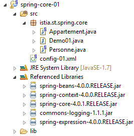
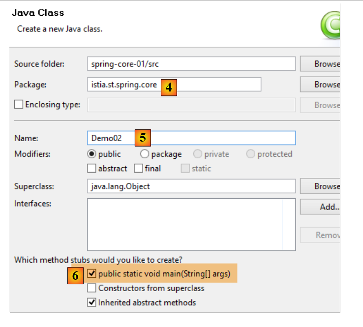
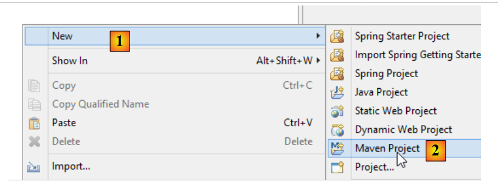
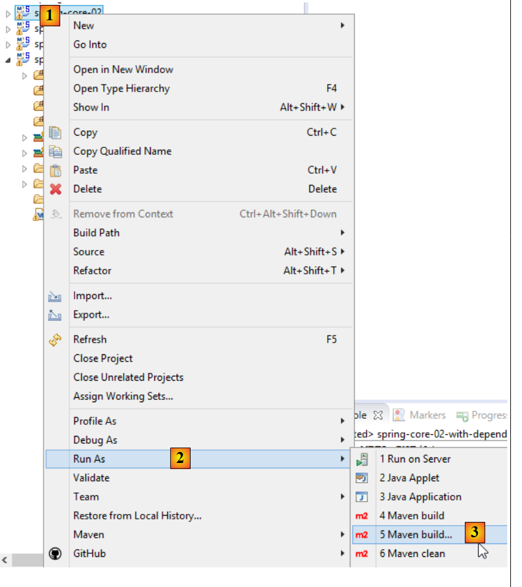
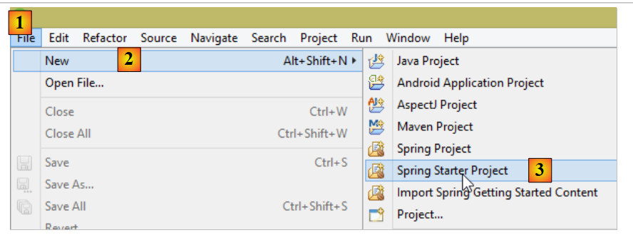
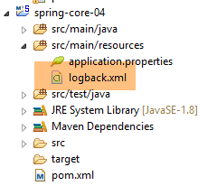
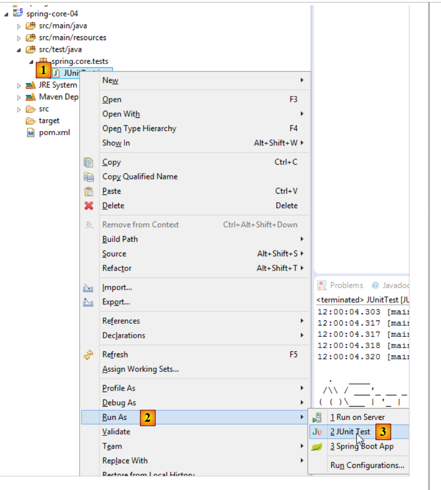

2. Introducción al marco Spring
Spring apareció en 2004, inicialmente como contenedor de objetos. Desde entonces, ha evolucionado en múltiples ramificaciones: Spring MVC, Spring Data, Spring Batch, ... [http://spring.io]. En este capítulo solo presentamos el contenedor de objetos. A continuación, algunos puntos de referencia:
- una aplicación tiene múltiples clases y algunas de ellas comparten objetos que deben ser únicos (singletons). Spring crea y gestiona estos singletons;
- Spring coloca estos singletons en una estructura denominada contexto;
- las clases tienen acceso a los singletons de la aplicación solicitándolos a Spring mediante su nombre, su tipo o ambos;
- Spring crea los singletons y gestiona sus posibles dependencias: de hecho, un singleton puede tener referencias a uno o varios singletons. Cuando Spring crea un singleton, también crea sus dependencias;
- cuando se inicia una aplicación basada en Spring, esta puede solicitar a Spring que cree todos los singletons de la aplicación. Estos estarán disponibles posteriormente en el contexto de Spring;
- Spring facilita el uso de arquitecturas por capas y la programación por interfaces. En los casos sencillos, cada capa está implementada por un singleton y implementa una interfaz. Si la aplicación trabaja con las interfaces de las capas y no con sus clases de implementación, se obtiene una arquitectura evolutiva que permite cambiar la implementación de una capa sin cambiar las demás gracias a las dos características siguientes:
- la aplicación obtiene una referencia a la capa a través de su nombre. Spring le proporciona una referencia a la clase que implementa la capa;
- la aplicación utiliza esta referencia como la de la interfaz de la capa y no como la de una clase;
La declaración de los singletons puede realizarse de tres formas que pueden combinarse:
- dentro de un archivo XML,
- en una clase especial de configuración;
- con cualquier clase mediante anotaciones;
A continuación presentamos tres ejemplos de configuración:
- [exemple-01]: configuración centralizada en un único archivo XML;
- [exemple-02]: configuración centralizada en una única clase Java;
- [exemple-03]: configuración distribuida en varias clases Java;
El último ejemplo, [exemple-04], se centra en la configuración Spring de una arquitectura por capas. Es el ejemplo más importante. Se utilizará constantemente para configurar las arquitecturas del documento.
Estos cuatro ejemplos sientan las bases de lo que viene a continuación:
- configuración de Spring e inyección de dependencias;
- uso de Maven para gestionar las dependencias de un proyecto;
- uso de JUnit para probar los proyectos;
2.1. Configuración del entorno de trabajo
Debe tener:
- tener instalado un JDK (Java Development Kit) (apartado 23.1);
- tener instalado el gestor de dependencias Maven (apartado 23.2);
- tener instalado IDE Spring Tool Suite (STS) (apartado 23.3);
- descargado los códigos del documento [http://tahe.developpez.com/java/spring-database];
Importe a STS las configuraciones de ejecución de la carpeta [eclipse config] de los ejemplos. Estas configuraciones son especialmente importantes. Algunos proyectos requieren, para ejecutarse, pasar argumentos a JVM y este tipo de configuración suele ser un quebradero de cabeza. Por otra parte, este documento utiliza proyectos Maven. Cuando aparezca la advertencia:
Nota: ejecute [Alt-F5] para regenerar todos los proyectos Maven.
Se recomienda encarecidamente seguirla. Sin esta precaución, los proyectos pueden presentar errores incomprensibles simplemente porque las dependencias de Maven entre proyectos son erróneas.
 |
- en [1], haz clic con el botón derecho en [Package Explorer];
 |
- en [4a-4b-4c], seleccione la carpeta [eclipse config / launch configurations] [4b] de ejemplos;
- en [5], las configuraciones disponibles. Seleccione todas;
- en [6], finalice el asistente;
- en [7-8], visualice las configuraciones de ejecución importadas;
 |
- en [8-9], desmarque [9] para mostrar las configuraciones de proyectos no cargados en STS. Este es el caso actualmente;
 |
- en [10], las aplicaciones Java, y en [11], las configuraciones de ejecución de los tres primeros ejemplos que vamos a estudiar;
- en [12], las pruebas JUnit y en [13] la configuración de ejecución del cuarto ejemplo de este apartado;
Ahora, cree una variable de Eclipse llamada [M2_REPO] que designará la carpeta del repositorio local de Maven (véase el apartado 23.2). Esta variable se utiliza en varias configuraciones de ejecución:
 |
Se ha asignado a la variable [M2_REPO] el valor que se muestra en [6] a continuación:
 |
Ahora, importe los cuatro ejemplos de la carpeta [spring-core]:
 |
- en [1], haz clic con el botón derecho en [Package Explorer];
 |
- en [4a-4b], seleccione la carpeta [spring-core] de los ejemplos;
- en [5], seleccionar todos los proyectos de la carpeta y generar [Finish];
- en [6], los cuatro proyectos de [Package Explorer];
2.2. Ejemplo-01
2.2.1. El proyecto Eclipse
 |
2.2.2. La clase [Personne]
 |
package istia.st.spring.core;
public class Personne {
// campos
private String nom;
private String prenom;
private int age;
// constructores
public Personne() {
}
public Personne(String nom, String prénom, int âge) {
this.nom = nom;
this.prenom = prénom;
this.age = âge;
}
// toString
public String toString() {
return String.format("Personne[%s, %s,%d]", prenom, nom, age);
}
// getters y setters
public String getNom() {
return nom;
}
public void setNom(String nom) {
this.nom = nom;
}
public String getPrenom() {
return prenom;
}
public void setPrenom(String prenom) {
this.prenom = prenom;
}
public int getAge() {
return age;
}
public void setAge(int age) {
this.age = age;
}
}
Nota: los getters y setters se pueden generar automáticamente de la siguiente manera [1-2]:
 |
2.2.3. La clase [Appartement]
 |
package istia.st.spring.core;
public class Appartement {
// campos
private Personne proprietaire;
private int surface;
// getters y setters
public Personne getProprietaire() {
return proprietaire;
}
public void setProprietaire(Personne proprietaire) {
this.proprietaire = proprietaire;
}
public int getSurface() {
return surface;
}
public void setSurface(int surface) {
this.surface = surface;
}
// toString
public String toString() {
return String.format("Appartement[%s, %s]", proprietaire, surface);
}
}
Nota: esta clase no tiene un constructor explícito. En este caso, siempre existe por defecto el constructor sin parámetros que no hace nada. Cuando se crean constructores, este constructor por defecto ya no existe implícitamente. Por lo tanto, hay que definirlo explícitamente:
2.2.4. El archivo de configuración de Spring
 |
<?xml version="1.0" encoding="UTF-8"?>
<beans xmlns="http://www.springframework.org/schema/beans" xmlns:xsi="http://www.w3.org/2001/XMLSchema-instance" xmlns:util="http://www.springframework.org/schema/util"
xsi:schemaLocation="http://www.springframework.org/schema/beans http://www.springframework.org/schema/beans/spring-beans-4.0.xsd
http://www.springframework.org/schema/util http://www.springframework.org/schema/util/spring-util-4.0.xsd">
<!-- Persona 01 -->
<bean id="personne_01" class="istia.st.spring.core.Personne">
<constructor-arg index="0" value="dubois" />
<constructor-arg index="1" value="paul" />
<constructor-arg index="2" value="34" />
</bean>
<!-- Persona 02 -->
<bean id="personne_02" class="istia.st.spring.core.Personne">
<property name="nom" value="martin" />
<property name="prenom" value="micheline" />
<property name="age" value="18" />
</bean>
<!-- una lista de personas -->
<util:list id="club">
<ref bean="personne_01" />
<ref bean="personne_02" />
</util:list>
<!-- un apartamento -->
<bean id="appartement" class="istia.st.spring.core.Appartement">
<property name="surface" value="100" />
<property name="proprietaire" ref="personne_01" />
</bean>
</beans>
- líneas 2, 27: los singletons se definen dentro de una etiqueta <beans>;
- líneas 6-10: cada singleton se define mediante una etiqueta <bean>;
- línea 6: [id] es el identificador del singleton. [class] es el nombre completo de la clase que se va a instanciar;
- líneas 7-9: los tres valores que se deben pasar al constructor de la clase [Personne];
- líneas 12-16: la clase [Personne] se crea primero con su constructor por defecto [new Personne()]. A continuación, para cada etiqueta [property], se utiliza un setter de la clase. Por ejemplo, para la línea 13, se ejecutará el método [setNom("martin")]. Por lo tanto, es necesario que exista el método [setNom]. Es importante recordar este punto;
- líneas 18-21: la etiqueta <util:list> permite definir un singleton que es una lista;
- línea 19: designa el singleton [personne_01] definido en la línea 6. Aquí tenemos lo que se denomina una inyección de dependencias. Se pueden utilizar dos atributos para inicializar el campo de un singleton:
- [value]: para asignar al campo un valor primitivo (cadena, número, fecha, etc.),
- [ref]: para asignar al campo la referencia de un objeto Spring;
Nota: el archivo de configuración de Spring se puede generar de la siguiente manera [1-4]:
 |
2.2.5. La clase ejecutable
 |
package istia.st.spring.core;
import java.util.ArrayList;
import java.util.List;
import org.springframework.context.ApplicationContext;
import org.springframework.context.support.ClassPathXmlApplicationContext;
public class Demo01 {
@SuppressWarnings({ "unchecked", "resource" })
public static void main(String[] args) {
// recuperación del contexto Spring
ApplicationContext ctx = new ClassPathXmlApplicationContext("config-01.xml");
// se recuperan los beans
Personne p01 = ctx.getBean("personne_01", Personne.class);
Personne p02 = ctx.getBean("personne_02", Personne.class);
List<Personne> club = ctx.getBean("club", new ArrayList<Personne>().getClass());
Appartement appart01 = ctx.getBean(Appartement.class);
// se muestran
System.out.println("personnes--------");
System.out.println(p01);
System.out.println(p02);
System.out.println("club--------");
for (Personne p : club) {
System.out.println(p);
}
System.out.println("appartement--------");
System.out.println(appart01);
// los beans recuperados son singletons
// se pueden solicitar varias veces, siempre se recupera el mismo bean
Personne p01b = ctx.getBean("personne_01", Personne.class);
System.out.println(String.format("beans [p01,p01b] identiques ? %s", p01b == p01));
}
}
- línea 14: crea el contexto Spring. A continuación, se instancian todos los singletons definidos en el archivo [config-01.xml];
- línea 16: solicita una referencia al singleton identificado por [personne_01] de tipo [Personne]. Este segundo parámetro es opcional, pero en ese caso se recibe una referencia de tipo [Object], referencia que hay que convertir al tipo [Personne];
- línea 19: no se utiliza el nombre del bean, sino únicamente su tipo, ya que solo hay un singleton de tipo [Appartement];
- línea 18: se ha utilizado tanto el identificador como el tipo del singleton deseado. El identificador es superfluo, ya que solo hay un singleton de tipo [new ArrayList<Personne>().getClass()];
- líneas 32-33: muestran que si se solicita varias veces el mismo singleton, siempre se obtiene la misma referencia, lo que demuestra que se trata efectivamente de un singleton. Es importante comprender este punto;
Nota: se puede generar una clase ejecutable de la siguiente manera [1-6]:
 |
 |
- al marcar [6], la clase generada contendrá un método estático [main] que la hará ejecutable;
2.2.6. Las dependencias del proyecto
 |
- Dependencias de Spring: [spring-core, spring-beans, spring-context, spring-expression, commons-logging];
Las dependencias se añaden al proyecto de la siguiente manera:
 |
- en [1]: clic con el botón derecho del ratón en el proyecto / [Build Path] / [Configure Build Path];
 |
- en [2]: [Add JARs] si los JARs que se van a añadir se encuentran en una carpeta del proyecto. De lo contrario, [Add External JARs];
 |
- en [3], seleccione los JARs que desea añadir al ClassPath del proyecto (en este caso, se encuentran en la carpeta [lib] dentro del proyecto);
Definición: el [ClassPath] de un proyecto es el conjunto de carpetas exploradas por el JVM (Java Virtual Machine) que ejecuta el proyecto, para encontrar una clase a la que este hace referencia. En un proyecto Eclipse, el [ClassPath] está formado por los siguientes elementos:
- la carpeta [bin] del proyecto;
- los elementos del [Build Path] del proyecto;
La carpeta [bin] es la carpeta generada por la compilación de la carpeta [src]. Por lo tanto, todo lo que se coloque en la carpeta [src] pasa automáticamente a formar parte de [ClassPath] (aunque no sea un archivo .java). Por lo tanto, en el proyecto anterior, el archivo de configuración de Spring [config-01.xml], que se encuentra en la carpeta [src], formará parte de [Classpath] del proyecto en el momento de la ejecución.
2.2.7. Los resultados
févr. 21, 2014 1:16:23 PM org.springframework.context.support.AbstractApplicationContext prepareRefresh
Infos: Refreshing org.springframework.context.support.ClassPathXmlApplicationContext@3ac67f69: startup date [Fri Feb 21 13:16:23 CET 2014]; root of context hierarchy
févr. 21, 2014 1:16:23 PM org.springframework.beans.factory.xml.XmlBeanDefinitionReader loadBeanDefinitions
Infos: Loading XML bean definitions from class path resource [config-01.xml]
personnes--------
Personne[paul, dubois,34]
Personne[micheline, martin,18]
club--------
Personne[paul, dubois,34]
Personne[micheline, martin,18]
appartement--------
Appartement[Personne[paul, dubois,34], 100]
beans [p01,p01b] identiques ? true
2.3. Ejemplo-02
2.3.1. El proyecto Eclipse
 |
2.3.2. La clase de configuración de Spring
package istia.st.spring.core;
import java.util.ArrayList;
import java.util.List;
import org.springframework.context.annotation.Bean;
import org.springframework.context.annotation.Configuration;
@Configuration
public class Config {
@Bean
public Personne personne_01() {
return new Personne("Paul", "Dubois", 34);
}
@Bean
public Personne personne_02() {
return new Personne("Martin", "Micheline", 18);
}
@Bean
public List<Personne> club(Personne personne_01, Personne personne_02) {
List<Personne> personnes = new ArrayList<Personne>();
personnes.add(personne_01);
personnes.add(personne_02);
return personnes;
}
@Bean
public Appartement appartement(Personne personne_01) {
Appartement appartement = new Appartement();
appartement.setSurface(200);
appartement.setPropriétaire(personne_01);
return appartement;
}
}
- línea 9: la anotación [@Configuration] es una anotación de Spring. Indica que la clase anotada define singletons. Estos se definen mediante la anotación [@Bean]. Spring ejecutará todos los métodos anotados con [@Bean]. Estos crean los singletons de la aplicación;
- líneas 12-15: define un singleton identificado por [personne_01], es decir, el nombre del método.
- línea 23: los parámetros [personne_01, personne_02] llevan los nombres de los singletons. Spring los inicializará automáticamente con las referencias de dichos singletons. A esto se le denomina inyección de parámetros;
Esta forma de configurar los singletons es más explícita que la que utiliza el archivo XML. De hecho, estamos reproduciendo nosotros mismos lo que Spring hacía implícitamente a partir del archivo XML.
2.3.3. La clase ejecutable
 |
package istia.st.spring.core;
import java.util.ArrayList;
import java.util.List;
import org.springframework.context.annotation.AnnotationConfigApplicationContext;
public class Demo02 {
@SuppressWarnings({ "unchecked", "resource" })
public static void main(String[] args) {
// recuperación del contexto Spring
AnnotationConfigApplicationContext ctx = new AnnotationConfigApplicationContext(Config.class);
// se recuperan los beans
Personne p01 = ctx.getBean("personne_01", Personne.class);
Personne p02 = ctx.getBean("personne_02", Personne.class);
List<Personne> club = ctx.getBean("club", new ArrayList<Personne>().getClass());
Appartement appart01 = ctx.getBean(Appartement.class);
// se muestran
System.out.println("personnes--------");
System.out.println(p01);
System.out.println(p02);
System.out.println("club--------");
for (Personne p : club) {
System.out.println(p);
}
System.out.println("appartement--------");
System.out.println(appart01);
// los beans recuperados son singletons
// se pueden solicitar varias veces, siempre se recupera el mismo bean
Personne p01b = ctx.getBean("personne_01", Personne.class);
System.out.println(String.format("beans [p01,p01b] identiques ? %s", p01b == p01));
}
}
- la línea 13 provoca la instanciación de todos los beans definidos en la clase [Config];
- el resto del código no cambia;
2.3.4. Las dependencias del proyecto
 |  |
Las dependencias se establecen mediante el siguiente archivo [pom.xml]:
<project xmlns="http://maven.apache.org/POM/4.0.0" xmlns:xsi="http://www.w3.org/2001/XMLSchema-instance"
xsi:schemaLocation="http://maven.apache.org/POM/4.0.0 http://maven.apache.org/xsd/maven-4.0.0.xsd">
<modelVersion>4.0.0</modelVersion>
<groupId>istia.st.spring.core</groupId>
<artifactId>spring-core-02</artifactId>
<version>0.0.1-SNAPSHOT</version>
<name>spring-core-02</name>
<description>Introduction à Spring</description>
<properties>
<project.build.sourceEncoding>UTF-8</project.build.sourceEncoding>
<java.version>1.7</java.version>
</properties>
<dependencies>
<!-- Spring -->
<dependency>
<groupId>org.springframework</groupId>
<artifactId>spring-context</artifactId>
<version>4.1.3.RELEASE</version>
</dependency>
</dependencies>
<!-- plugins -->
<build>
<plugins>
<plugin>
<artifactId>maven-assembly-plugin</artifactId>
<configuration>
<descriptorRefs>
<descriptorRef>jar-with-dependencies</descriptorRef>
</descriptorRefs>
</configuration>
</plugin>
<plugin>
<groupId>org.apache.maven.plugins</groupId>
<artifactId>maven-surefire-plugin</artifactId>
<version>2.18.1</version>
</plugin>
</plugins>
</build>
</project>
La gestión manual de las dependencias de un proyecto se convierte en un quebradero de cabeza cuando se utilizan bibliotecas Java cuyas dependencias se desconocen. Así, el marco [Hibernate], que gestiona el acceso a las bases de datos, tiene decenas de dependencias. El proyecto [Maven] resuelve este problema. Se indica la dependencia que se necesita. Esta se busca automáticamente en los repositorios Maven distribuidos en el net. Si la dependencia solicitada tiene a su vez otras dependencias, estas también se descargan automáticamente. Estas dependencias descargadas se almacenan en un repositorio local en el equipo. Si más adelante otra aplicación necesita la misma dependencia, esta no se descargará, sino que se buscará en el repositorio local. Una dependencia se caracteriza por los siguientes elementos:
- línea 17: una etiqueta <dependency>;
- línea 18: un atributo [groupId] que, por lo general, identifica a la empresa que ha creado la dependencia;
- línea 19: un atributo [artifactId] que identifica la dependencia;
- línea 20: un atributo [version] que identifica la version deseada;
La generación del proyecto producirá a su vez un componente Maven definido por las líneas 4-8:
- líneas 4-6: los atributos [ groupId, artifactId,version] que acabamos de describir;
- líneas 7-8: son atributos opcionales;
Más adelante volveremos sobre la función de las líneas 24-40. Para transformar un proyecto Eclipse normal en un proyecto Maven, hay que hacer dos cosas:
- crear el archivo [pom.xml] anterior;
- declarar que el proyecto es ahora un proyecto Maven [1-4]:
 |
El icono de un proyecto Maven tiene una M [4]. La S indica que el proyecto tiene elementos Spring. No se recomienda convertir (como acabamos de hacer) un proyecto Eclipse en un proyecto Maven, ya que entonces el proyecto no tiene la estructura esperada para un proyecto Maven, lo que a veces puede provocar problemas inesperados.
2.3.5. Generación del artefacto Maven del proyecto
Denominamos artefacto Maven del proyecto al elemento definido por las líneas 4-6 del archivo [pom.xml]:
<groupId>istia.st.spring.core</groupId>
<artifactId>spring-core-02</artifactId>
<version>0.0.1-SNAPSHOT</version>
Para generar este artefacto, es necesario que las siguientes líneas 3-7 estén presentes en el archivo [pom.xml]:
<build>
<plugins>
<plugin>
<groupId>org.apache.maven.plugins</groupId>
<artifactId>maven-surefire-plugin</artifactId>
<version>2.18.1</version>
</plugin>
</plugins>
</build>
Estas definen el plugin de Maven capaz de generar el artefacto del proyecto. A continuación, se procede de la siguiente manera:
 |
El artefacto así generado se guarda en el repositorio local de Maven. Su ubicación se puede encontrar en la configuración de Eclipse:
 |
A continuación, es posible verificar que el artefacto de Maven se ha instalado correctamente:
 |
A partir de ahora, otro proyecto Maven local podrá utilizar este archivo.
2.4. Ejemplo-03
2.4.1. El proyecto Eclipse
En esta ocasión, creamos un proyecto Maven [1-8]:
 |
 |
- en [3b]: seleccione una carpeta vacía donde se generará el proyecto;
 |
- en [4]: el identificador del grupo Maven al que pertenecerá el proyecto;
- en [5]: el nombre del artefacto Maven generado:
- en [6]: su version;
- en [7]: su modo de empaquetado (también existen war, ear, apk, ...);
- en [8]: el proyecto así creado;
Un proyecto Maven tiene, por defecto, una estructura de directorios concreta:
- [src / main / java]: los códigos fuente del proyecto. Los productos compilados a partir de estas fuentes se guardarán en la carpeta [target/classes] del proyecto;
- [src / main / resources]: los recursos que deben estar en la ruta de clases del proyecto sin ser necesariamente fuentes Java. Se copiarán tal cual en la carpeta [target/classes] del proyecto;
- [src / test / java]: los códigos fuente de las pruebas del proyecto. Los productos compilados a partir de estas fuentes se guardarán en la carpeta [target/test-classes] del proyecto. Estos elementos no se incluyen en el archivo Maven del proyecto;
- [src / test / resources]: los recursos que deben estar en la ruta de clases del proyecto para las pruebas, sin que por ello sean archivos fuente Java. Se copiarán tal cual en la carpeta [target/test-classes] del proyecto;
Completamos el proyecto de la siguiente manera:
 |
2.4.2. La configuración de Maven
Se genera un archivo [pom.xml] por defecto. Lo modificamos de la siguiente manera:
<project xmlns="http://maven.apache.org/POM/4.0.0" xmlns:xsi="http://www.w3.org/2001/XMLSchema-instance"
xsi:schemaLocation="http://maven.apache.org/POM/4.0.0 http://maven.apache.org/xsd/maven-4.0.0.xsd">
<modelVersion>4.0.0</modelVersion>
<groupId>istia.st.spring.core</groupId>
<artifactId>spring-core-03</artifactId>
<version>0.0.1-SNAPSHOT</version>
<name>spring-core-03</name>
<description>Introduction à Spring</description>
<properties>
<project.build.sourceEncoding>UTF-8</project.build.sourceEncoding>
<java.version>1.8</java.version>
</properties>
<!-- proyecto Maven principal -->
<parent>
<groupId>org.springframework.boot</groupId>
<artifactId>spring-boot-starter-parent</artifactId>
<version>1.2.3.RELEASE</version>
</parent>
<dependencies>
<!-- Contexto Spring -->
<dependency>
<groupId>org.springframework</groupId>
<artifactId>spring-context</artifactId>
</dependency>
<!-- registros -->
<dependency>
<groupId>org.springframework.boot</groupId>
<artifactId>spring-boot-starter-logging</artifactId>
</dependency>
</dependencies>
<!-- plugins -->
<build>
<plugins>
<!-- para la generación del archivo del proyecto con sus dependencias -->
<plugin>
<artifactId>maven-assembly-plugin</artifactId>
<configuration>
<descriptorRefs>
<descriptorRef>jar-with-dependencies</descriptorRef>
</descriptorRefs>
</configuration>
</plugin>
<!-- para la instalación del artefacto del proyecto en el repositorio local de Maven -->
<plugin>
<groupId>org.apache.maven.plugins</groupId>
<artifactId>maven-surefire-plugin</artifactId>
<version>2.18.1</version>
</plugin>
</plugins>
</build>
</project>
- línea 11: el proyecto está codificado en UTF-8;
- línea 12: se utiliza un JDK 1.8 para compilar el proyecto;
- líneas 16-20: para los proyectos que utilizan las bibliotecas Spring, resulta práctico utilizar un proyecto Maven padre llamado [spring-boot-starter-parent]. Este define las versiones de las diferentes bibliotecas Spring, así como las de sus dependencias. Esto permite no tener que definirlas en la definición de dependencias. Por lo tanto, en las líneas 24-27 no se especifica la version de [spring-context] deseada. Será la definida por el proyecto padre [spring-boot-starter-parent]. Esta técnica permite no preocuparse por posibles incompatibilidades de versiones entre dependencias. Las definidas por el proyecto padre son compatibles entre sí;
- líneas 29-32: Spring escribe una gran cantidad de información en la consola a través de una biblioteca de registros. Esta se importa aquí;
- líneas 40-47: un plugin de Maven sobre el que volveremos más adelante;
- líneas 50-52: el plugin de generación del artefacto Maven del proyecto;
2.4.3. La clase de configuración de Spring
 |
La clase [Config] es la siguiente:
package istia.st.spring.core.config;
import istia.st.spring.core.entities.Personne;
import java.util.ArrayList;
import java.util.List;
import org.springframework.context.annotation.Bean;
import org.springframework.context.annotation.ComponentScan;
import org.springframework.context.annotation.Configuration;
@Configuration
@ComponentScan({ "spring.core.entities" })
public class Config {
@Bean
public Personne personne_01() {
return new Personne("Paul", "Dubois", 34);
}
@Bean
public Personne personne_02() {
return new Personne("Martin", "Micheline", 18);
}
@Bean
public List<Personne> club(Personne personne_01, Personne personne_02) {
List<Personne> personnes = new ArrayList<Personne>();
personnes.add(personne_01);
personnes.add(personne_02);
return personnes;
}
@Bean
public int mySurface() {
return 200;
}
}
- Aquí encontramos un código ya comentado con dos novedades:
- línea 13: indica que hay otros beans que instanciar en el paquete [spring.core.entities],
- líneas 34-37: un bean [mySurface];
2.4.4. La clase [Appartement]
 |
package spring.core.entities;
import org.springframework.beans.factory.annotation.Autowired;
import org.springframework.beans.factory.annotation.Qualifier;
import org.springframework.stereotype.Component;
@Component
public class Appartement {
// campos inyectados por Spring
@Autowired
@Qualifier("personne_01")
private Personne propriétaire;
@Autowired
@Qualifier("mySurface")
private int surface;
// getters y setters
public Personne getPropriétaire() {
return propriétaire;
}
public void setPropriétaire(Personne propriétaire) {
this.propriétaire = propriétaire;
}
public int getSurface() {
return surface;
}
public void setSurface(int surface) {
this.surface = surface;
}
// toString
public String toString() {
return String.format("Appartement[%s, %s]", propriétaire, surface);
}
}
- línea 7: la anotación [@Component] indica a Spring que la clase es un singleton que el framework debe instanciar y gestionar. Esto se debe a que en la clase [Config] hemos escrito [@ComponentScan({ "istia.st.spring.core.entities" })], por lo que se encontrará este singleton;
- línea 11: solicita a Spring que inyecte en el campo la referencia de uno de los singletons. Esta se puede definir de dos maneras:
- por su identificador (líneas 12, 16),
- por su tipo, si solo hay un singleton de ese tipo;
2.4.5. Ejecución del proyecto
La ejecución del proyecto da el siguiente resultado en la consola:
- líneas 1-3: Spring genera una gran cantidad de registros, varias decenas de líneas. Estos registros pueden ser muy útiles para depurar un proyecto que no funciona. Cuando funciona, se pueden reducir los registros de la siguiente manera:
 |
En la carpeta [src / main / resources] se crea el siguiente archivo [logback.xml]:
<configuration>
<appender name="STDOUT" class="ch.qos.logback.core.ConsoleAppender">
<!-- a los codificadores se les asigna por defecto el tipo
ch.qos.logback.classic.encoder.PatternLayoutEncoder -->
<encoder>
<pattern>%d{HH:mm:ss.SSS} [%thread] %-5level %logger{36} - %msg%n</pattern>
</encoder>
</appender>
<!-- control del nivel de los registros -->
<root level="info"> <!-- info, debug, warn -->
<appender-ref ref="STDOUT" />
</root>
</configuration>
- En la línea 12, se establece el nivel de los registros. [debug] es un nivel muy detallado, [info] mucho menos;
Estos son los resultados con [level=info]:
Ahora solo hay una línea de registros.
2.4.6. Generación del archivo del proyecto con sus dependencias
El archivo creado en el proyecto anterior también puede ser utilizado por un proyecto Eclipse que no sea Maven. Algunos proyectos utilizan numerosas bibliotecas y puede resultar complicado no olvidarse de ninguna. Ahí es donde Maven hace maravillas, ya que basta con nombrar la dependencia de nivel más alto para que las demás de nivel inferior se añadan automáticamente a la ruta de clases del proyecto. Cuando un proyecto Eclipse que no utiliza Maven debe utilizar los archivos de un proyecto Maven, es posible generar el artefacto de este último con todas sus dependencias (lo que no era el caso en el proyecto anterior). Para esta generación, es necesario que las siguientes líneas 3-10 estén presentes en el archivo [pom.xml]:
<build>
<plugins>
<plugin>
<artifactId>maven-assembly-plugin</artifactId>
<configuration>
<descriptorRefs>
<descriptorRef>jar-with-dependencies</descriptorRef>
</descriptorRefs>
</configuration>
</plugin>
<plugin>
<groupId>org.apache.maven.plugins</groupId>
<artifactId>maven-surefire-plugin</artifactId>
<version>2.18.1</version>
</plugin>
</plugins>
</build>
Estas definen el plugin de Maven capaz de generar el artefacto del proyecto con sus dependencias. A continuación, se procede de la siguiente manera [1-6]:
 |
 |
- [4-6] representan una configuración de ejecución de Maven;
- en [4], introduzca cualquier nombre;
- en [5], indique la carpeta del proyecto;
- en [6], introduzca los objetivos de Maven (goals):
- [clean]: se elimina la carpeta [target] del proyecto;
- [compile]: se compila el proyecto. Los productos de la compilación se colocan en una carpeta [target] regenerada;
- [assembly:single]: las clases del proyecto y sus dependencias se colocan en un único archivo jar dentro de la carpeta [target];
Tras la ejecución, se obtiene el siguiente resultado:
 |
Un archivo jar es un archivo comprimido que, por lo tanto, se puede abrir con un descompresor. Una vez descomprimido el archivo anterior, se obtiene la siguiente estructura de directorios:
- en [8], las clases de las dependencias del proyecto;
- en [9], las clases del propio proyecto;
2.5. Ejemplo-04
2.5.1. Objetivo
Este ejemplo retoma uno de los presentados en el documento [Introduction à Spring IoC], en el que se muestra la contribución de Spring a la configuración de arquitecturas multicapa. En el documento original, el ejemplo se trata con una configuración de Spring realizada mediante un archivo XML. Aquí tratamos el ejemplo con una configuración mediante clases Java y anotaciones.
Queremos configurar un proyecto Spring para la siguiente arquitectura:
 |
Cada capa presenta una interfaz implementada con dos clases. Queremos demostrar que, gracias a Spring, se puede cambiar la implementación de una capa sin que ello afecte en absoluto al código de las demás capas.
2.5.2. El proyecto Eclipse
2.5.2.1. Creación
Creamos un nuevo tipo de proyecto:
 |
 |
- en [4], introduce el nombre del proyecto Eclipse;
- en [5], elija un proyecto Maven;
- en [6], elige un version de Java >=1.7;
- en [7], elija la version de Spring Boot propuesta;
- la información de [8-11] es información de Maven;
- en [12], se puede elegir una o varias de las dependencias propuestas. Esto tendrá como efecto integrar en el archivo [pom.xml] de Maven una serie de dependencias;
 |
- en [13], se designa una carpeta existente y vacía para alojar el proyecto;
- en [14], el proyecto generado. Vamos a analizar sus elementos;
El proyecto es un proyecto Maven configurado por el siguiente archivo [pom.xml]:
<?xml version="1.0" encoding="UTF-8"?>
<project xmlns="http://maven.apache.org/POM/4.0.0" xmlns:xsi="http://www.w3.org/2001/XMLSchema-instance"
xsi:schemaLocation="http://maven.apache.org/POM/4.0.0 http://maven.apache.org/xsd/maven-4.0.0.xsd">
<modelVersion>4.0.0</modelVersion>
<groupId>istia.st.spring.core</groupId>
<artifactId>spring-core-04</artifactId>
<version>0.0.1-SNAPSHOT</version>
<packaging>jar</packaging>
<name>spring-core-04</name>
<description>Programmation par interfaces</description>
<parent>
<groupId>org.springframework.boot</groupId>
<artifactId>spring-boot-starter-parent</artifactId>
<version>1.2.3.RELEASE</version>
<relativePath/> <!-- búsqueda del padre en el repositorio -->
</parent>
<properties>
<project.build.sourceEncoding>UTF-8</project.build.sourceEncoding>
<start-class>demo.SpringCore04Application</start-class>
<java.version>1.8</java.version>
</properties>
<dependencies>
<dependency>
<groupId>org.springframework.boot</groupId>
<artifactId>spring-boot-starter</artifactId>
</dependency>
<dependency>
<groupId>org.springframework.boot</groupId>
<artifactId>spring-boot-starter-test</artifactId>
<scope>test</scope>
</dependency>
</dependencies>
<build>
<plugins>
<plugin>
<groupId>org.springframework.boot</groupId>
<artifactId>spring-boot-maven-plugin</artifactId>
</plugin>
</plugins>
</build>
</project>
- líneas 6-12: recogen la información introducida en el asistente de creación del proyecto;
- líneas 14-19: el proyecto Maven principal que define una serie de bibliotecas con sus versiones. Si alguna de ellas es una dependencia del proyecto, se menciona en el archivo [pom.xml] sin su version;
- línea 23: esta línea solo sirve si se tiene la intención de generar un archivo ejecutable del proyecto. De lo contrario, no se utiliza;
- líneas 28-31: la dependencia mínima de un proyecto Spring Boot. Recordemos que no hemos seleccionado ninguna dependencia en la lista desplegable;
- líneas 33-37: la dependencia necesaria para gestionar pruebas unitarias JUnit [http://junit.org/] integradas con Spring. La línea 36 indica que la dependencia solo es necesaria para las pruebas. Por lo tanto, no se incluirá en el archivo del proyecto;
- líneas 42-45: el complemento que permite generar el artefacto Maven del proyecto;
La lista de dependencias que aporta este archivo es la siguiente: [1]:
 |
Veremos que son suficientes para lo que queremos hacer aquí.
2.5.2.2. La clase ejecutable
 |
La clase ejecutable [SpringCore04Application] [[2] es la siguiente:
package demo;
import org.springframework.boot.SpringApplication;
import org.springframework.boot.autoconfigure.SpringBootApplication;
@SpringBootApplication
public class SpringCore04Application {
public static void main(String[] args) {
SpringApplication.run(SpringCore04Application.class, args);
}
}
- línea 6, la anotación [@SpringBootApplication] es un atajo para las tres anotaciones [@Configuration, @EnableAutoConfiguration, @ComponentScan], lo que significa:
- que la clase [SpringCore04Application] es una clase de configuración de Spring;
- que se le pide a Spring Boot que realice configuraciones a partir de las clases que encuentre en la ruta de clases del proyecto, es decir, en este caso en las dependencias de Maven;
- que examine la carpeta actual (la de la clase [SpringCore04Application]) para encontrar otros posibles componentes de Spring;
- línea 10: se ejecuta el método estático [SpringApplication.run]. Su primer parámetro es una clase de configuración de Spring, en este caso la clase [SpringCore04Application]. Su segundo parámetro es, en este caso, la lista de argumentos pasados al método [main] (línea 9). El método estático [SpringApplication.run] tiene como función crear el contexto Spring, es decir, crear los diferentes beans que se encuentran bien en las clases de configuración, bien en las carpetas exploradas por la anotación [@ComponentScan]. El método [main] aquí no hace nada más. Para darle un poco más de sustancia, lo transformaremos de la siguiente manera:
package demo;
import org.springframework.boot.SpringApplication;
import org.springframework.boot.autoconfigure.SpringBootApplication;
import org.springframework.context.ConfigurableApplicationContext;
@SpringBootApplication
public class SpringCore04Application {
public static void main(String[] args) {
// instanciación del contexto Spring
ConfigurableApplicationContext context = SpringApplication.run(SpringCore04Application.class, args);
// visualización del contexto
System.out.println("---------------- Liste des beans Spring");
for (String beanName : context.getBeanDefinitionNames()) {
System.out.println(beanName);
}
// cierre del contexto
context.close();
}
}
- línea 12: el método estático [SpringApplication.run] devuelve el contexto Spring que ha construido;
- líneas 15-17: se muestra el nombre de todos los beans de este contexto;
Podemos ejecutar la aplicación de la siguiente manera: [1-3]. El método habitual [Run As Java Application] también es válido.
 |
Se obtiene el siguiente resultado:
. ____ _ __ _ _
/\\ / ___'_ __ _ _(_)_ __ __ _ \ \ \ \
( ( )\___ | '_ | '_| | '_ \/ _` | \ \ \ \
\\/ ___)| |_)| | | | | || (_| | ) ) ) )
' |____| .__|_| |_|_| |_\__, | / / / /
=========|_|==============|___/=/_/_/_/
:: Spring Boot :: (v1.2.3.RELEASE)
2015-04-08 11:18:38.254 INFO 4796 --- [ main] demo.SpringCore04Application : Starting SpringCore04Application on Gportpers3 with PID 4796 (D:\data\istia-1415\polys\istia\dvp-spring-database\codes\original\intro-spring-core\spring-core-04\target\classes started by ST in D:\data\istia-1415\polys\istia\dvp-spring-database\codes\original\intro-spring-core\spring-core-04)
2015-04-08 11:18:38.295 INFO 4796 --- [ main] s.c.a.AnnotationConfigApplicationContext : Refreshing org.springframework.context.annotation.AnnotationConfigApplicationContext@64485a47: startup date [Wed Apr 08 11:18:38 CEST 2015]; root of context hierarchy
2015-04-08 11:18:38.776 INFO 4796 --- [ main] o.s.j.e.a.AnnotationMBeanExporter : Registering beans for JMX exposure on startup
2015-04-08 11:18:38.788 INFO 4796 --- [ main] demo.SpringCore04Application : Started SpringCore04Application in 0.773 seconds (JVM running for 1.335)
---------------- Liste des beans Spring
org.springframework.context.annotation.internalConfigurationAnnotationProcessor
org.springframework.context.annotation.internalAutowiredAnnotationProcessor
org.springframework.context.annotation.internalRequiredAnnotationProcessor
org.springframework.context.annotation.internalCommonAnnotationProcessor
springCore04Application
org.springframework.context.annotation.ConfigurationClassPostProcessor.importAwareProcessor
org.springframework.context.annotation.ConfigurationClassPostProcessor.enhancedConfigurationProcessor
org.springframework.boot.autoconfigure.AutoConfigurationPackages
org.springframework.boot.autoconfigure.PropertyPlaceholderAutoConfiguration
org.springframework.boot.autoconfigure.condition.BeanTypeRegistry
propertySourcesPlaceholderConfigurer
org.springframework.boot.autoconfigure.jmx.JmxAutoConfiguration
mbeanExporter
objectNamingStrategy
mbeanServer
2015-04-08 11:18:38.789 INFO 4796 --- [ main] s.c.a.AnnotationConfigApplicationContext : Closing org.springframework.context.annotation.AnnotationConfigApplicationContext@64485a47: startup date [Wed Apr 08 11:18:38 CEST 2015]; root of context hierarchy
2015-04-08 11:18:38.790 INFO 4796 --- [ main] o.s.j.e.a.AnnotationMBeanExporter : Unregistering JMX-exposed beans on shutdown
- líneas 14-28: los beans del contexto Spring. Desconocemos su función. Encontramos el bean [springCore04Application] en la línea 18, que por su anotación [@SpringBootApplication] se convierte automáticamente en un bean Spring;
- las demás líneas son registros de Spring de nivel [INFO]. Como ya hemos visto, estos registros pueden controlarse mediante el archivo [logback.xml] ubicado en la ruta de clases del proyecto:
 |
<configuration>
<appender name="STDOUT" class="ch.qos.logback.core.ConsoleAppender">
<!-- a los codificadores se les asigna por defecto el tipo
ch.qos.logback.classic.encoder.PatternLayoutEncoder -->
<encoder>
<pattern>%d{HH:mm:ss.SSS} [%thread] %-5level %logger{36} - %msg%n</pattern>
</encoder>
</appender>
<!-- control del nivel de los registros -->
<root level="warn"> <!-- información, debug, advertencia -->
<appender-ref ref="STDOUT" />
</root>
</configuration>
Si en la línea 12 anterior sustituimos el nivel [info] por [warn], obtenemos el siguiente resultado:
Los registros han desaparecido. Solo aparecen los mensajes de nivel [warn] y aquí no ha habido ninguno.
2.5.3. Implementación de las diferentes capas de la arquitectura
 |
Ahora vamos a implementar las tres capas de la arquitectura anterior:
 |
La capa [DAO] se implementa mediante el paquete [spring.core.dao]. Presenta la siguiente interfaz [IDao]:
package spring.core.dao;
public interface IDao {
public int doSomethingInDaoLayer(int a, int b);
}
Esta interfaz tiene dos implementaciones: [Dao1] y [Dao2]:
package spring.core.dao;
public class Dao1 implements IDao {
public int doSomethingInDaoLayer(int a, int b) {
return a+b;
}
}
package spring.core.dao;
public class Dao2 implements IDao {
public int doSomethingInDaoLayer(int a, int b) {
return a-b;
}
}
La capa [métier] está implementada por el paquete [spring.core.metier]. Presenta la siguiente interfaz [IMetier]:
package spring.core.metier;
public interface IMetier {
public int doSomethingInMetierLayer(int a, int b);
}
Esta interfaz tiene dos implementaciones: [Metier1] y [Metier2]:
package spring.core.metier;
import spring.core.dao.IDao;
public class Metier1 implements IMetier {
private IDao dao;
public int doSomethingInMetierLayer(int a, int b) {
a++;
b++;
return dao.doSomethingInDaoLayer(a, b);
}
public void setDao(IDao dao) {
this.dao = dao;
}
}
package spring.core.metier;
import spring.core.dao.IDao;
public class Metier2 implements IMetier {
private IDao dao;
public int doSomethingInMetierLayer(int a, int b) {
a--;
b++;
return dao.doSomethingInDaoLayer(a, b);
}
public void setDao(IDao dao) {
this.dao = dao;
}
}
La capa [UI] está implementada por el paquete [spring.core.ui]. Presenta la siguiente interfaz [IUi]:
package spring.core.ui;
public interface IUi {
public int doSomethingInUiLayer(int a, int b);
}
Esta interfaz tiene dos implementaciones: [Ui1] y [Ui2]:
package spring.core.ui;
import spring.core.metier.IMetier;
public class Ui1 implements IUi {
private IMetier metier;
public int doSomethingInUiLayer(int a, int b) {
a++;
b++;
return metier.doSomethingInMetierLayer(a, b);
}
public void setMetier(IMetier metier) {
this.metier = metier;
}
}
package spring.core.ui;
import spring.core.metier.IMetier;
public class Ui2 implements IUi {
private IMetier metier;
public int doSomethingInUiLayer(int a, int b) {
a--;
b++;
return metier.doSomethingInMetierLayer(a, b);
}
public void setMetier(IMetier metier) {
this.metier = metier;
}
}
2.5.4. Configuración del proyecto Spring
 |
La clase de configuración [Config] es la siguiente:
package spring.core.config;
import org.springframework.context.annotation.Bean;
import org.springframework.context.annotation.Configuration;
import spring.core.dao.Dao1;
import spring.core.dao.Dao2;
import spring.core.dao.IDao;
import spring.core.metier.IMetier;
import spring.core.metier.Metier1;
import spring.core.metier.Metier2;
import spring.core.ui.IUi;
import spring.core.ui.Ui1;
import spring.core.ui.Ui2;
@Configuration
public class Config {
// -------------- implementación [Ui1, Metier1, Dao1]
@Bean
public IDao dao1() {
return new Dao1();
}
@Bean
public IMetier metier1(IDao dao1) {
Metier1 metier = new Metier1();
metier.setDao(dao1);
return metier;
}
@Bean
public IUi ui1(IMetier metier1) {
Ui1 ui = new Ui1();
ui.setMetier(metier1);
return ui;
}
// -------------- implementación [Ui2, Metier2, Dao2]
@Bean
public IDao dao2() {
return new Dao2();
}
@Bean
public IMetier metier2(IDao dao2) {
Metier2 metier = new Metier2();
metier.setDao(dao2);
return metier;
}
@Bean
public IUi ui2(IMetier metier2) {
Ui2 ui = new Ui2();
ui.setMetier(metier2);
return ui;
}
}
- líneas 20-23: el bean denominado [dao1] (nombre del método) es una instancia de la clase [Dao1] (línea 22) considerada como una implementación de la interfaz [IDao] (línea 21). Por lo tanto, el bean [dao1] se considera una instancia de interfaz (la terminología es incorrecta, pero se puede entender) y no una instancia de clase. Es importante comprender este punto. Todos los demás beans también serán instancias de interfaces;
- líneas 25-30: una instancia de la interfaz [IMetier] implementada por la clase [Metier1];
- líneas 32-37: una instancia de la interfaz [IUi] implementada por la clase [Ui1];
- líneas 20-37: implementan las capas [UI, Metier, DAO] con instancias [Ui1, Metier1, Dao1];
- líneas 40-57: implementan las capas [UI, Metier, DAO] con instancias [Ui2, Metier2, Dao2];
2.5.5. Prueba unitaria [JUnitTest]
 |
La clase [JUnitTest] se coloca en la rama [src / test / java] del proyecto Maven. Los elementos de esta rama no se incluyen en el archivo final del proyecto. Su código es el siguiente:
package spring.core.tests;
import org.junit.Assert;
import org.junit.Test;
import org.junit.runner.RunWith;
import org.springframework.beans.factory.annotation.Autowired;
import org.springframework.beans.factory.annotation.Qualifier;
import org.springframework.boot.test.SpringApplicationConfiguration;
import org.springframework.test.context.junit4.SpringJUnit4ClassRunner;
import spring.core.config.Config;
import spring.core.dao.IDao;
import spring.core.metier.IMetier;
import spring.core.ui.IUi;
@SpringApplicationConfiguration(classes = { Config.class })
@RunWith(SpringJUnit4ClassRunner.class)
public class JUnitTest {
...
}
- línea 16: la anotación [@SpringApplicationConfiguration] es una anotación del proyecto Spring Boot Test (línea 8). Se introduce mediante la siguiente dependencia del archivo [pom.xml]:
<dependency>
<groupId>org.springframework.boot</groupId>
<artifactId>spring-boot-starter</artifactId>
</dependency>
Esta anotación tiene como parámetro la lista de clases de configuración que se utilizarán para construir el contexto Spring necesario para la prueba. Aquí utilizamos la clase de configuración [Config] ya presentada;
- línea 17: la anotación [@RunWith] es una anotación JUnit (línea 5). Su parámetro es la clase encargada de ejecutar las pruebas en lugar de la clase predeterminada del marco Junit. Esta clase es una clase Spring (línea 9). Utilizará las anotaciones Spring presentes en la clase de prueba;
La clase completa es la siguiente
...
@SpringApplicationConfiguration(classes = { Config.class })
@RunWith(SpringJUnit4ClassRunner.class)
public class JUnitTest {
// capa [UI]
@Autowired
@Qualifier("ui1")
private IUi ui1;
@Autowired
@Qualifier("ui2")
private IUi ui2;
// capa [métier]
@Autowired
@Qualifier("metier1")
private IMetier metier1;
@Autowired
@Qualifier("metier2")
private IMetier metier2;
// capa [dao]
@Autowired
@Qualifier("dao1")
private IDao dao1;
@Autowired
@Qualifier("dao2")
private IDao dao2;
@Test
public void testDao() {
Assert.assertEquals(30, dao1.doSomethingInDaoLayer(10, 20));
Assert.assertEquals(-10, dao2.doSomethingInDaoLayer(10, 20));
}
@Test
public void testMetier() {
Assert.assertEquals(32, metier1.doSomethingInMetierLayer(10, 20));
Assert.assertEquals(-12, metier2.doSomethingInMetierLayer(10, 20));
}
@Test
public void testUI() {
Assert.assertEquals(34, ui1.doSomethingInUiLayer(10, 20));
Assert.assertEquals(-14, ui2.doSomethingInUiLayer(10, 20));
}
}
- líneas 8-10: se inyecta (línea 8) el bean denominado (línea 9) [ui1]. Cabe destacar en la línea 10 que se inyecta una instancia de interfaz y no una instancia de clase;
- líneas 21-32: se inyectan de la misma manera los demás beans definidos en la clase [Config];
- línea 34: la anotación [@Test] designa un método que se debe ejecutar durante las pruebas. Las demás anotaciones posibles son las siguientes:
- [@BeforeClass]: método que se debe ejecutar antes de iniciar las pruebas;
- [@AfterClass]: método que se debe ejecutar una vez finalizadas todas las pruebas;
- [@Before]: método que se debe ejecutar antes de cada prueba;
- [@After]: método que se debe ejecutar después de cada prueba;
- línea 36: se comprueba que la llamada [dao1.doSomethingInDaoLayer(10, 20)] devuelve efectivamente 30. Por convención, el primer parámetro es el valor esperado y el segundo, el valor real;
- línea 36: prueba la instancia [dao1] de la interfaz [IDao];
- línea 37: comprueba la instancia [dao2] de la interfaz [IDao];
- línea 42: comprueba la instancia [metier1] de la interfaz [IMetier];
- línea 43: comprueba la instancia [metier2] de la interfaz [IMetier];
- línea 48: comprueba la instancia [ui1] de la interfaz [IUi];
- línea 36: prueba la instancia [ui2] de la interfaz [IUi];
Las aserciones que se pueden utilizar en un método de prueba son las siguientes:
- assertEquals(expresión1, expresión2): comprueba que los valores de ambas expresiones sean iguales. Se aceptan numerosos tipos de expresiones (int, String, float, double, boolean, char, short). Si las dos expresiones no son iguales, se lanza una excepción de tipo [AssertionFailedError ],
- assertEquals(real1, real2, delta): comprueba que dos valores reales son iguales con una precisión de delta, c.a.d abs(real1-real2)<=delta. Se puede escribir, por ejemplo, assertEquals(real1, real2, 1E-6) para verificar que dos valores son iguales con una precisión de 10-6,
- assertEquals(mensaje, expresión1, expresión2) y assertEquals(mensaje, real1, real2, delta) son variantes que permiten especificar el mensaje de error que se asociará a la excepción de tipo [AssertionFailedError] lanzada cuando falla el método [assertEquals],
- assertNotNull(Object) y assertNotNull(message, Object): comprueba que la referencia Object no sea nula,
- assertNull(Object) y assertNull(message, Object): comprueba que la referencia Object es igual a null,
- assertSame(Object1, Object2) y assertSame(mensaje, Object1, Object2): comprueba que las referencias Object1 y Object2 apuntan al mismo objeto,
- assertNotSame(Object1, Object2) y assertNotSame(mensaje, Object1, Object2): comprueba que las referencias Object1 y Object2 no apunten al mismo objeto;
Para realizar la prueba, se puede proceder de la siguiente manera:
 |
Se obtiene el siguiente resultado:
 |
Aquí todas las pruebas han tenido éxito. ¿Qué muestra este ejemplo? Muestra la flexibilidad que aporta el framework Spring en la configuración de una arquitectura por capas. Se puede decidir utilizar la implementación [Ui1, Metier1, Dao1] o [Ui2, Metier2, Dao2] simplemente mediante la configuración. Así, en la prueba JUnit anterior, si solo se mantiene la inyección de los beans [ui1, metier1, dao1], se trabaja con la primera arquitectura. Para cambiar de arquitectura, basta con cambiar los beans inyectados. Esto se hace sin modificar el código de las capas que implementan las interfaces. A este tipo de programación se le denomina «programación por interfaces», ya que no se utilizan las instancias de las clases que implementan las capas, sino las instancias de sus interfaces.
2.6. Conclusión
- Spring gestiona objetos que son singletons (una sola instancia). Spring también gestiona objetos que se instancian cada vez que se solicita una instancia a Spring. Este caso también se presentará en este documento;
- estos objetos pueden declararse de diversas formas que pueden combinarse:
- en un archivo XML,
- en una clase Java anotada con [@Configuration],
- con cualquier clase Java anotada con [@Component, @Service, ...];
- un objeto Spring puede inyectarse en otro objeto Spring con la anotación [@Autowired]. En este caso, se habla de inyección de dependencias (DI: Dependency Injection);
- Spring resulta muy práctico para configurar arquitecturas en capas con el uso conjunto del paradigma de la programación por interfaces;